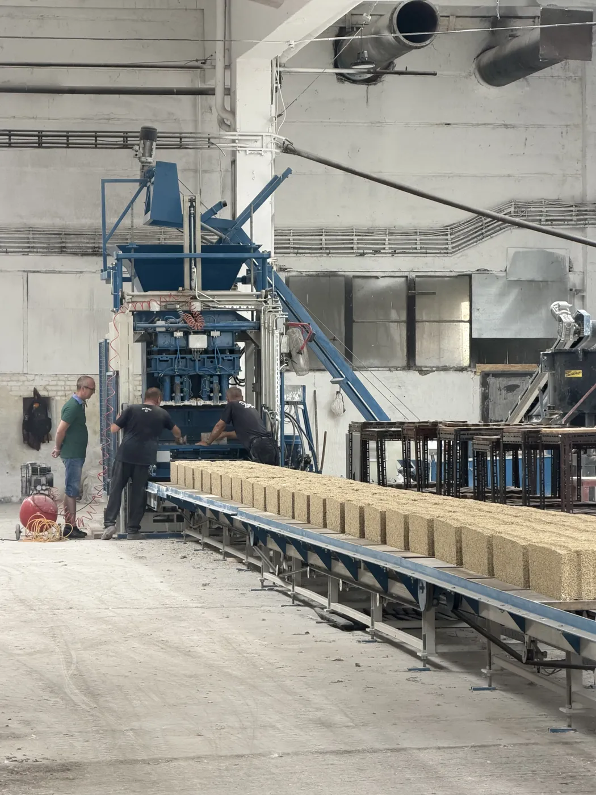
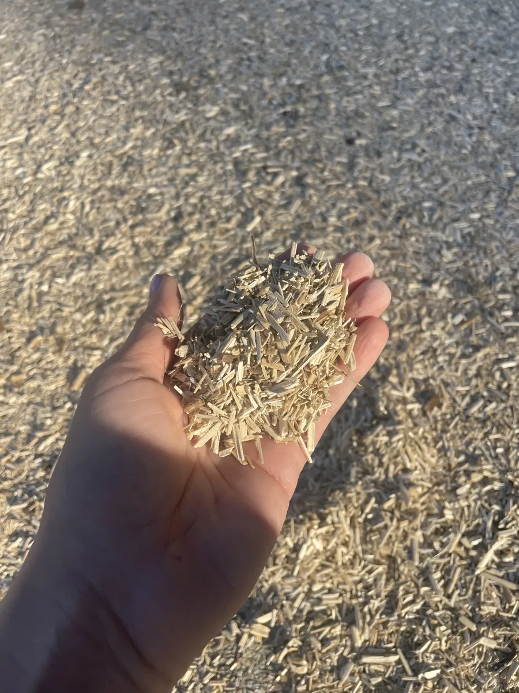
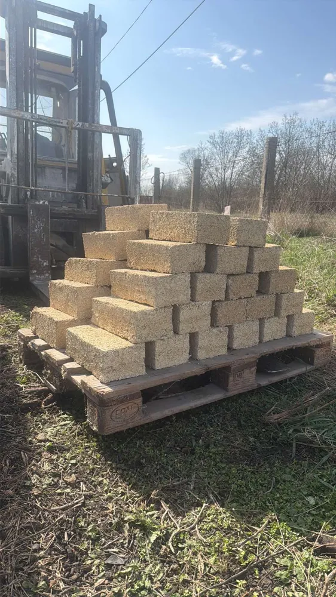
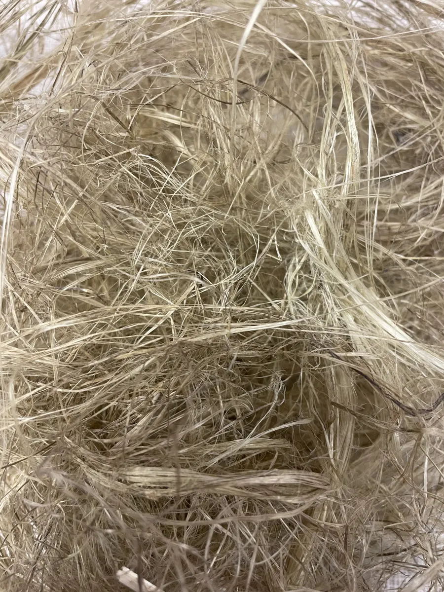
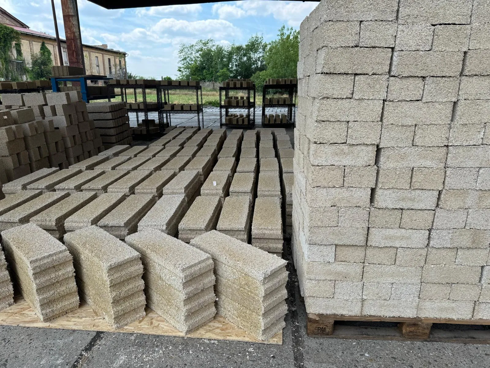
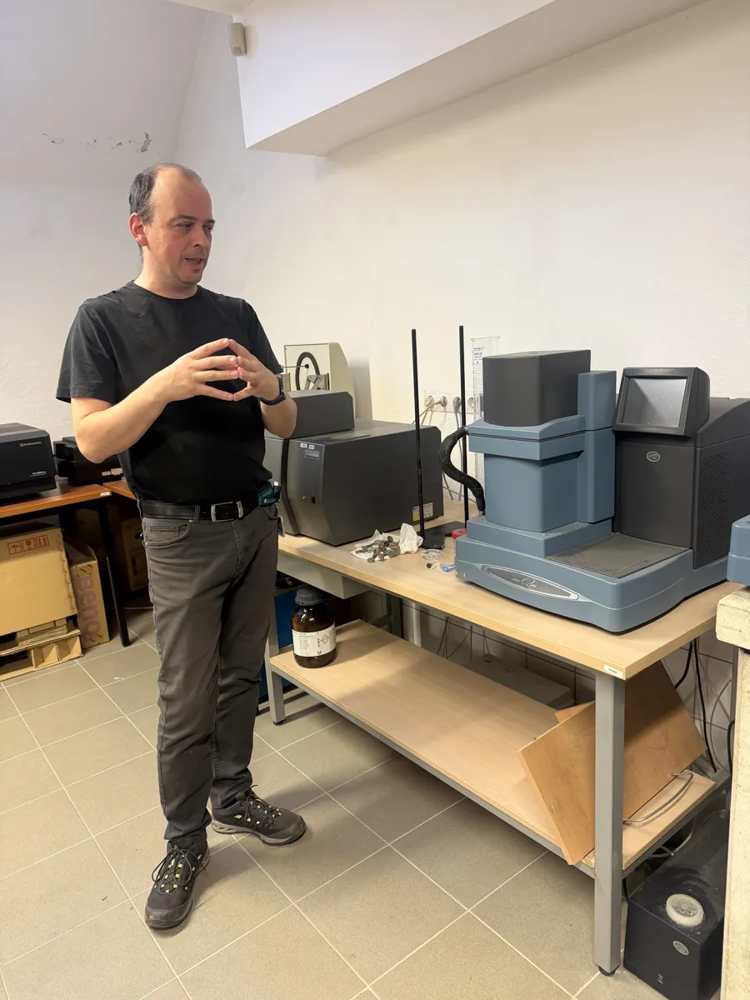
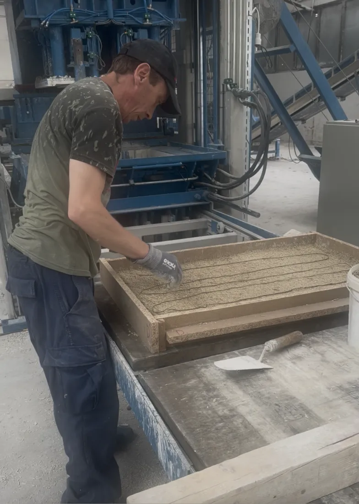

Fenntartható építőipari innováció ipari rostkenderből és természetes adhezív rendszerekből.
A HempX Innovációs Kft. új generációs, kenderalapú kompozit építőanyagokat fejleszt – a laboratóriumi prototípustól az üzemi környezetben validált megoldásokig.



Az ipari kender gyorsan növő, évente megújuló, regionálisan is termeszthető alapanyag. Pozdorjája – a szár fás része – kiváló alapot kínál könnyű, páraáteresztő, jó hőtechnikai tulajdonságú építőipari kompozitokhoz.
A HempX célja, hogy kender, speciális mészkeverékek és természetes adhezív komponensek kombinációjával olyan új építőanyag-család jöjjön létre, amely egyszerre szolgálja a fenntartható építést, a karbonlábnyom csökkentését és a korszerű műszaki teljesítményt.

Alacsony vízigényű, gyors növekedésű növény, amely évente megújuló biomasszát ad, miközben növekedése során szén-dioxidot köt meg.
8–15 t/ha szárazanyagA kenderalapú rendszerek alacsony testsűrűsége jó komfortérzetet és kedvező hőtárolási viselkedést biztosíthat.
λ ≈ 0,06–0,08 W/mKNem csupán anyagkísérletezés: laboratóriumi és üzemi környezetben mért, dokumentált fejlesztési folyamat.
SZTE + Mélyépítő Labor„A kender nem csupán mezőgazdasági alapanyag, hanem építőipari lehetőség: természetes, megújuló és képes új irányt adni a fenntartható anyagfejlesztésnek.”— HempX Innovációs Kft. · K+F csapat
Projektünk kiindulópontja egy laboratóriumban tesztelt alfa prototípus; a cél az üzemi környezetben validált, műszakilag dokumentált, TRL7 szintű kenderkompozit építőanyag-család.



Iratkozz fel hírlevelünkre, és elsőként értesülsz a HempX eredményeiről.